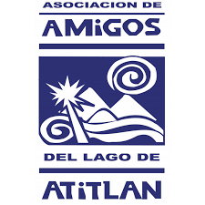

El Lago de Atitlán
Atitlán es un ícono natural y cultural que inspira a quienes lo visitan.
Es uno de los destinos más emblemáticos del país y fuente de agua para 100 mil personas.
Atitlán ha perdido su claridad y pureza. Podemos ser activos en su rescate o testigos pasivos de su destrucción.
En el año 2025, seremos reconocidos como una Asociación líder que contribuyó exitosamente con el salvamento del Lago de Atitlán a través, principalmente, del impulso de un sistema integral de tratamiento de aguas residuales de su cuenca, que continua aportando su conocimiento y expertaje para la conservación del mismo en función de mejorar las condiciones de vida de sus comunidades, todo regido para su sostenibilidad por una legislación y autoridad específicas para la materia.
Vision
En el año 2025, seremos reconocidos como una Asociación líder que contribuyó exitosamente con el salvamento del Lago de Atitlán a través, principalmente, del impulso de un sistema integral de tratamiento de aguas residuales de su cuenca, que continua aportando su conocimiento y expertaje para la conservación del mismo en función de mejorar las condiciones de vida de sus comunidades, todo regido para su sostenibilidad por una legislación y autoridad específicas para la materia.
Operación Sonrisa es una fundación internacional sin fines de lucro, con la misión de brindar tratamiento integral y cirugías reconstructivas gratuitas, con excelencia médica, a personas de escasos recursos que padecen de labio y paladar hendido, transformando sus vidas y la de su familia, una sonrisa a la vez.
Que cada niño que nace con una malformación de labio y/o paladar hendido en Guatemala, tenga la oportunidad de recibir tratamiento adecuado, de tal forma que pueda mejorar su calidad de vida.
Aproximadamente 1 de cada 700 niños nace cada año con labio o paladar hendido en Guatemala. Ellos son niños que luchan cada día por comer, beber y sobrevivir 1 de cada 10 de ellos muere antes de su primer año de vida por desnutrición y otras complicaciones asociadas a la malformación.
Voluntariado
Para poder ofrecer la atención integral que nuestros niños necesitan, se requiere el apoyo y colaboración de muchas personas, tanto médicos cómo no médicos.
Asociación Nuestro Ahijados The God's Child Project Casa Jackson es un centro de recuperación de emergencia Proyecto DEL NIÑO DIOS para los lactantes y niños desnutridos menores de 11 años.
Un esfuerzo para comenzar un hogar especializado para lactantes desnutridos fue iniciada por el Director Ejecutivo del Proyecto NIÑO Patrick Atkinson de Dios en 2007 en respuesta a la creciente cantidad de bebés cercanas a la muerte que fueron abandonados a las puertas del Proyecto.
Casa Jackson existe para proporcionar a los niños con la asistencia médica, nutricional y educativa que necesitan para la recuperación más rápida posible.
s